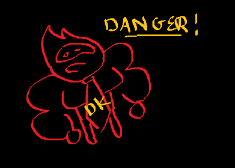

eggnog.articles
uuhhhh IDK
which donkey kong characters could I beat in a deathmatch (no weapons)?
Unease - Dick Walter♪

- Donkey Kong: No
- Diddy Kong: No
- Cranky Kong: No
- Lanky Kong: No
- Dixie Kong: No
- Chunky Kong: No
- Funky Kong: No
None of them. Apes are incredibly dangerous.
There are few animals that I am more afraid of. There's a bunch of stupid people who think apes are just
human babies just because they have thumbs but I know the real truth. Apes are smart enough to be malicious
but not smart enough to feel remorse. They will rip your face off because you gave them one too many peanuts
or some shit.